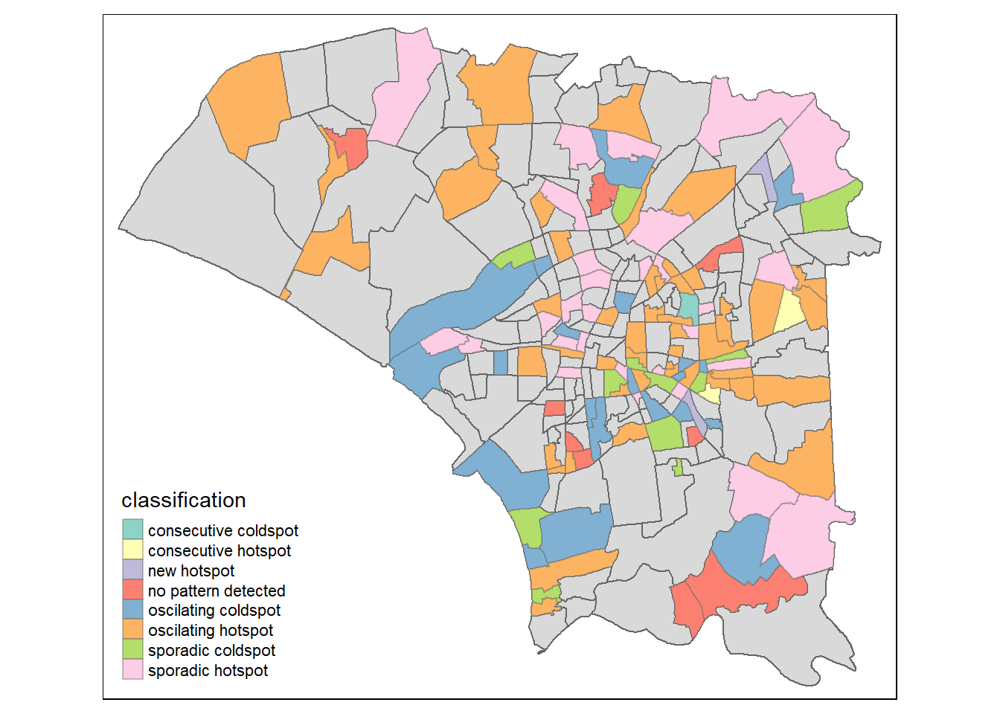

| Dataset | Description | Source |
|---|---|---|
| TAIWAN_VILLAGE_2020 | Geospatial data of village boundary of Taiwan | Historical map data of the village boundary: TWD97 longitude and latitude |
| Dengue_Daily(csv) | Aspatial data of reported dengue cases in Taiwan since 1998 | Dengue Daily Confirmed Cases Since 1998 |
Take-home Assignment 02: Application of Spatial and Spatio-temporal Analysis Methods to Discover the Distribution of Dengue Fever in Tainan City, Taiwan PART-2
Background
Dengue Hemorrhagic Fever (in short dengue fever) is one of the most widespread mosquito-borne diseases in the most tropical and subtropical regions. It is an acute disease caused by dengue virus infection which is transmitted by female Aedes aegypti and Aedes albopictus mosquitoes. In 2015, Taiwan had recorded the most severe dengue fever outbreak with more than 43,000 dengue cases and 228 deaths. Since then, the annual reported dengue fever cases were maintained at the level of not more than 200 cases. However, in 2023, Taiwan recorded 26703 dengue fever cases.
Objective
Explore and Uncovers:
- If the distribution of dengue fever outbreak at Tainan City, Taiwan are independent from space and space and time.
- If the outbreak is indeed spatial and spatio-temporal dependent, then, you would like to detect where are the clusters and outliers, and the emerging hot spot/cold spot areas.
Data Acquisition
For the purpose of this take-home exercise, two data sets are used, they are:
Install Packages & Importing Data
Install Necessary Packages
For this assignment, we will be using the following packages:
pacman::p_load(sf, sfdep, tmap, tidyverse, plotly)Importing & Wrangling Data
tainan <- st_read(dsn = "../data/geospatial",
layer = "TAINAN_VILLAGE")Reading layer `TAINAN_VILLAGE' from data source
`C:\dljyuan\IS415-GAA\data\geospatial' using driver `ESRI Shapefile'
Simple feature collection with 649 features and 10 fields
Geometry type: POLYGON
Dimension: XY
Bounding box: xmin: 120.0269 ymin: 22.88751 xmax: 120.6563 ymax: 23.41374
Geodetic CRS: TWD97dengue <- read_csv("../data/aspatial/Dengue_Daily.csv")
dengue <- dengue %>%
filter(居住縣市 == "台南市")
tainan <- tainan[tainan$TOWNID %in% c("D01", "D02", "D04", "D06", "D07", "D08", "D32", "D39"), ]
tainan$COUNTYNAME <- ifelse(tainan$COUNTYNAME == "臺南市", "台南市", as.character(tainan$COUNTYNAME))
dengue <- dengue %>%
rename('COUNTYNAME' = 居住縣市,
'TOWNNAME' = 居住鄉鎮,
'VILLNAME' = 居住村里,
'x-coordinate' = 最小統計區中心點X,
'y-coordinate' = 最小統計區中心點Y)
dengue$WEEK <- as.numeric(format(dengue$發病日, "%V"))
dengue$YEAR <- as.numeric(format(dengue$發病日, "%Y"))
dengue <- dengue[dengue$WEEK >= 31 & dengue$WEEK <= 50 & dengue$YEAR == 2023, ]
tainan <- st_transform(tainan, crs = 3414)Combined towname and villname to differentiate different village with similar name
dengue$combined_location <- paste(dengue$TOWNNAME, dengue$VILLNAME, sep = "-")
tainan$combined_location <- paste(tainan$TOWNNAME, tainan$VILLNAME, sep = "-")Group the dengue data by epidemiology week and combined name
dengue <- dengue %>%
group_by(WEEK,combined_location) %>%
summarise(CASES = sum(確定病例數))
dengue_sf <- left_join(tainan,dengue, by="combined_location") %>%
select(11:13)Drop geometry as will affect the filling up of missing values
# Print count for location
print(length(unique(dengue_sf$combined_location)))[1] 258dengue_sf <- st_drop_geometry(dengue_sf)
print(dengue_sf[rowSums(is.na(dengue_sf)) > 0, ]) combined_location WEEK CASES
2235 安南區-鹿耳里 NA NA
2259 仁德區-文賢里 NA NA
2260 永康區-龍埔里 NA NA
2261 永康區-永明里 NA NA
2262 南區-鹽埕里 NA NA
2263 北區-北華里 NA NA
2264 北區-華德里 NA NA
2265 北區-福德里 NA NA
2266 北區-長勝里 NA NA
2267 北區-長興里 NA NA
2268 北區-大興里 NA NA
2269 北區-大光里 NA NA
2270 北區-小北里 NA NA
2271 北區-雙安里 NA NA
2272 北區-立人里 NA NA
2273 中西區-小西門里 NA NA
2274 中西區-兌悅里 NA NA
2275 中西區-五條港里 NA NA
2276 中西區-南美里 NA NA
2277 安平區-王城里 NA NA
2278 安平區-天妃里 NA NA
2279 中西區-城隍里 NA NA
2280 中西區-西和里 NA NA
2281 北區-北門里 NA NA
2451 永康區-塩興里 NA NA
2452 北區-元美里 NA NA
2453 中西區-南廠里 NA NA
2454 中西區-淺草里 NA NA
2455 中西區-府前里 NA NA
2456 中西區-南門里 NA NA
2457 北區-合興里 NA NA
2467 永康區-北興里 NA NA
2986 安南區-顯宮里 NA NAFilling up missing values where all the locations with zero cases for some of the epidemilogy week
# Get unique locations
unique_locations <- unique(dengue_sf$combined_location)
# Define the number of iterations and starting value
num_iterations <- 20
starting_value <- 31
# Loop through the iterations
for (i in starting_value:(starting_value + num_iterations - 1)) {
# Define the time period with missing data
missing_time <- i
# Identify missing locations for the specified time period
existing_locations <- dengue_sf$combined_location[dengue_sf$WEEK == missing_time]
missing_locations <- setdiff(unique_locations, existing_locations)
# Create new rows for missing locations with zero values for extra columns
new_rows <- data.frame(combined_location = missing_locations, WEEK = missing_time, CASES = 0)
# Append new rows to the space-time cube
dengue_sf <- rbind(dengue_sf, new_rows)
}Removing unnecessary NA values after filling operation
dengue_sf <- na.omit(dengue_sf)Creating a Time Series Cube
dengue_sf <- as_tibble(dengue_sf)
CASES_st <- spacetime(dengue_sf, tainan,
.loc_col = "combined_location",
.time_col = "WEEK")is_spacetime_cube(CASES_st)[1] TRUEComputing Gi*
Deriving the spatial weights
CASES_nb <- CASES_st %>%
activate("geometry") %>%
mutate(nb = include_self(st_contiguity(geometry)),
wt = st_inverse_distance(nb, geometry,
scale = 1,
alpha = 1),
.before = 1) %>%
set_nbs("nb") %>%
set_wts("wt")gi_stars <- CASES_nb %>%
group_by(WEEK) %>%
mutate(gi_star = local_gstar_perm(
CASES, nb, wt)) %>%
tidyr::unnest(gi_star)Man-Kendall Test
With these Gi* measures we can then evaluate the hotspot locations(Villages) highlighted in the PART 1 of the assignment for a trend using the Mann-Kendall test.
cbg <- gi_stars %>%
ungroup() %>%
filter(combined_location == "東區-崇信里") |>
select(combined_location, WEEK, gi_star)p <- ggplot(data = cbg,
aes(x = WEEK,
y = gi_star)) +
geom_line() +
theme_light()
ggplotly(p)cbg %>%
summarise(mk = list(
unclass(
Kendall::MannKendall(gi_star)))) %>%
tidyr::unnest_wider(mk)# A tibble: 1 × 5
tau sl S D varS
<dbl> <dbl> <dbl> <dbl> <dbl>
1 -0.726 0.00000879 -138 190. 950cbg <- gi_stars %>%
ungroup() %>%
filter(combined_location == "東區-自強里") |>
select(combined_location, WEEK, gi_star)p <- ggplot(data = cbg,
aes(x = WEEK,
y = gi_star)) +
geom_line() +
theme_light()
ggplotly(p)cbg %>%
summarise(mk = list(
unclass(
Kendall::MannKendall(gi_star)))) %>%
tidyr::unnest_wider(mk)# A tibble: 1 × 5
tau sl S D varS
<dbl> <dbl> <dbl> <dbl> <dbl>
1 -0.179 0.284 -34 190. 950cbg <- gi_stars %>%
ungroup() %>%
filter(combined_location == "安南區-海佃里") |>
select(combined_location, WEEK, gi_star)p <- ggplot(data = cbg,
aes(x = WEEK,
y = gi_star)) +
geom_line() +
theme_light()
ggplotly(p)cbg %>%
summarise(mk = list(
unclass(
Kendall::MannKendall(gi_star)))) %>%
tidyr::unnest_wider(mk)# A tibble: 1 × 5
tau sl S D varS
<dbl> <dbl> <dbl> <dbl> <dbl>
1 -0.611 0.000191 -116 190. 950cbg <- gi_stars %>%
ungroup() %>%
filter(combined_location == "安南區-溪墘里") |>
select(combined_location, WEEK, gi_star)p <- ggplot(data = cbg,
aes(x = WEEK,
y = gi_star)) +
geom_line() +
theme_light()
ggplotly(p)cbg %>%
summarise(mk = list(
unclass(
Kendall::MannKendall(gi_star)))) %>%
tidyr::unnest_wider(mk)# A tibble: 1 × 5
tau sl S D varS
<dbl> <dbl> <dbl> <dbl> <dbl>
1 -0.632 0.000113 -120 190. 950cbg <- gi_stars %>%
ungroup() %>%
filter(combined_location == "永康區-三合里") |>
select(combined_location, WEEK, gi_star)p <- ggplot(data = cbg,
aes(x = WEEK,
y = gi_star)) +
geom_line() +
theme_light()
ggplotly(p)cbg %>%
summarise(mk = list(
unclass(
Kendall::MannKendall(gi_star)))) %>%
tidyr::unnest_wider(mk)# A tibble: 1 × 5
tau sl S D varS
<dbl> <dbl> <dbl> <dbl> <dbl>
1 -0.579 0.000406 -110 190. 950Based on the results above, it’s evident that the number of dengue cases in the five identified hotspots generally decreases after epidemiology week 40. There are slight downward but insignificant trends.
Performing Emerging Hotspot Analysis
ehsa <- emerging_hotspot_analysis(
x = CASES_st,
.var = "CASES",
k = 1,
nsim = 99
)ggplot(data = ehsa,
aes(x = classification)) +
geom_bar() +
theme(axis.text.x = element_text(size = 5))Figure above shows that Oscillating hot spot class has the high numbers of dengue cases.
Visualising EHSA
tainan_ehsa <- tainan %>%
left_join(ehsa,
by = join_by(combined_location == location))ehsa_sig <- tainan_ehsa %>%
filter(p_value < 0.05)
tmap_mode("plot")
tm_shape(tainan_ehsa) +
tm_polygons() +
tm_borders(alpha = 0.5) +
tm_shape(ehsa_sig) +
tm_fill("classification") +
tm_borders(alpha = 0.4)
Conclusion
In conclusion, the analysis of Dengue Fever outbreak distribution in Tainan City, Taiwan, reveals spatial and spatio-temporal dependency of the disease. Spatially, we observed significant clustering of dengue cases, with higher incidence rates concentrated in central Tainan and lower rates in peripheral areas. From August to October, consistent hotspot and coldspot patterns emerged, with hotspots centralized in Tainan and coldspots at its outskirts. However, from November onwards, we noticed a notable shift in the hotspot area towards the outer right corner of the city.
Additionally, our analysis shows a decrease in dengue cases within identified hotspots after epidemiology week 40, although these downward trends were statistically insignificant. These findings underscore the importance of spatial and spatio-temporal analysis in comprehending dengue outbreak dynamics. Such insights enable targeted interventions and efficient resource allocation to curb disease spread.